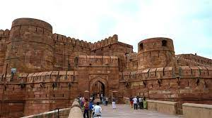

Discover the Charm of Agra
Agra, a hidden gem, invites you to explore its natural beauty and cultural richness. Here are some must-visit places in Agra:
Agra Castle
Agra Castle stands as a testament to the region's rich history. The medieval architecture and panoramic views from the castle offer a glimpse into Agra's past and present.
Agra Waterfalls

Escape into nature's beauty at Agra Waterfalls. The cascading waters, surrounded by lush greenery, create a serene atmosphere perfect for relaxation and rejuvenation.
Agra Village Square

Experience the local culture at Agra Village Square, where vibrant markets and traditional events showcase the community's warmth. Engage with locals and savor the flavors of Agra's culinary delights.
Plan your visit to Agra and immerse yourself in its unique blend of history, nature, and culture.